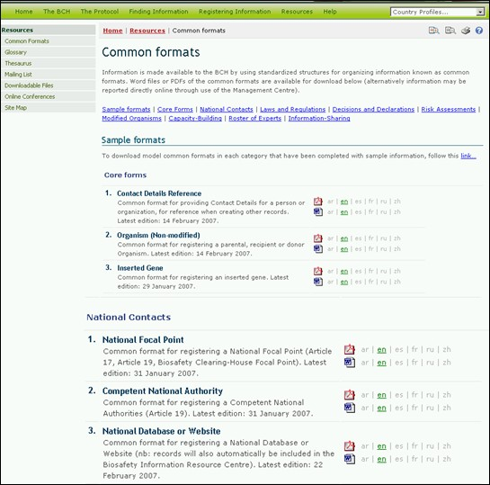

Los Formatos comunes se utilizan para normalizar la estructura y la organización de la información de las bases de datos del CIISB. La utilización de estos formatos mejora la eficiencia del Portal Central CIISB y aseguran el acceso a la información de manera predecible y fácil.
Los formatos comunes constituyen la base de los formularios de entrada en línea del Centro de Gestión.

Figure 44
La página de Formatos Comunes proporciona enlaces a los documentos MS Word y PDF de los formatos comunes para las siguientes categorías:
1. Formularios principales
- Referencia de los Detalle de Contacto.
- Organismo (No modificado)
- Gen insertado
2. Contactos Nacionales
- Punto Focal Nacional
- Autoridad Nacional Competente
- Sitios Web y Bases de Datos Nacionales
3. Leyes y Reglamentaciones
- Ley Nacional, Reglamentaciones y Directrices Nacionales
- Acuerdos bilaterales, Regionales o Internacional
4. Decisiones y Declaraciones
- Decisiones sobre los OVM con arreglo al Acuerdo Fundamentado Previo
- Decisiones sobre los OVM-AHA con arreglo al Artículo 11
- Otras Decisiones, Declaraciones o Notificaciones
5. Evaluaciones de riesgos
- Evaluaciones de Riesgo
6. Organismos modificados
- OVM – Identificador Único
7. Actividades de Creación de Capacidad
- Necesidades y Prioridades en Creación de Capacidad
- Oportunidades en Creación de Capacidad
- Proyectos de Creación de Capacidad
- Cursos de Bioseguridad Acreditadas Académicamente.
8. Lista de Expertos
- Expertos en Bioseguridad
- Informes sobre la Misión de Expertos en Bioseguridad
9. Intercambio de información y Otros Recursos.
- Recursos de Información en Bioseguridad.
- Organizaciones en Bioseguridad
- Consideraciones Socioeconómicas.